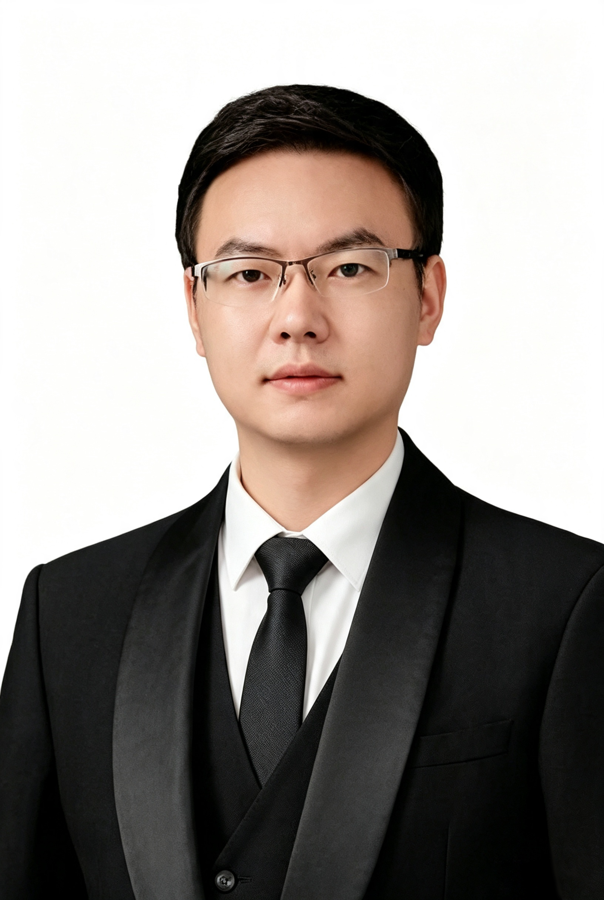

|
Shao, Renrong (邵仁荣)
|
 |
Ph.D., Postdoc, Assistant Professor
Faculty of Military Health Services
Naval Medical University (Second Military Medical University)
Address: No. 800, Xiangyin Road, Yangpu District, Shanghai, P.R. China
E-mail: roryshaw6613@gmail.com, roryshao@foxmail.com
|
About Me
Renrong Shao is an Assistant Professor and a Postdoctoral Fellow working under the supervision of Prof. Lulu Zhang (Changjiang Scholar) at the Naval Medical University. He received his Ph.D. degree from the School of Computer Science and Technology, East China Normal University, in June 2024, co-advised by Prof. Jun Wang (Young Thousand Talents Scholar) and Prof. Wei Zhang. His main research interests include Model Compression, Transfer Learning, AI Generated Content (AIGC), Agentic Science. Currently, as the first author, he has published more than 10 papers in top-tier international journals and conferences, including IEEE TIP, IEEE TCSVT, ICCV, and PR, among others. He also serves as a reviewer and/or Program Committee (PC) member for several respected journals and conferences, such as IEEE TIP, IEEE TKDE, IEEE TCSVT, ACM MM, CVPR, and AAAI. He has led or participated in multiple medical research projects and was selected for the Navy Medical Science and Technology Young Talent Cultivation Program in 2026.
Research
My research interests include:
Model Compression: Knowledge Distillation (KD), Model Quantification.
Transfer Learning: Data-free Knowledge Distillation(DFKD), Source-free Domain Adaptation (SFDA).
Generated Content (AIGC): Large Language Model (LLM), Stable Diffusion Model (SD).
Agentic Science: Agentic Medical Task Analysis, Agentic Basic Medical Research.
Selected Publications
-
DSVM-UNet : Enhancing VM-UNet with Dual Self-distillation for Medical Image Segmentation[C]. International Conference on Acoustics, Speech, and Signal Processing (ICASSP), 2026. (CCF B)
Renrong Shao, D. Li, D. Xia, L. Shao, J. Lu, F. Zheng, L. Zhang.
-
Consistent Assistant Domains Transformer for Source-free Domain Adaptation[J]. IEEE Transactions on Image Processing (IEEE TIP), 2025. (CCF A, JCR Q1, IF = 13.7)
Renrong Shao, W. Zhang*, K. Luo, Q. Li*, J. Wang*.
-
Attention Residual Fusion Network with Contrast for Source-free Domain Adaptation[J]. IEEE Transactions on Circuits and Systems for Video Technology (TCSVT), 2025. (JCR Q1, IF = 11.1)
Renrong Shao, W. Zhang*, J. Wang*.
-
Data-free Knowledge Distillation for Fine-grained Vision Categorization[C]. IEEE International Conference on Computer Vision (ICCV-23), Oct. 2023. (CCF A)
Renrong Shao, W. Zhang*, J. Yin, J. Wang*.
-
Conditional Pseudo-Supervised Contrast for Data-Free Knowledge Distillation[J]. Pattern Recognition (PR), 2023: 109781. (JCR Q1, IF = 8.4)
Renrong Shao, W. Zhang*, J. Wang.
-
A Survey of Knowledge Distillation in Deep Learning[J]. Chinese Journal of Computer, 45(08):1638-1673, 2022. (CCF A Chinese, IF = 6.8)
Renrong Shao, Y. Liu, W. Zhang*, J. Wang.
Note: * indicates the corresponding author.
Full list of publications in Google Scholar.
Academic Service
Reviewer or PC
-
Chinese Journal of Computer (CJC 22,23), Pattern Recognition (PR 23), IEEE Transactions on Image Processing (IEEE TIP 23), IEEE Transactions on Knowledge and Data Engineering(TKDE 23), ACM Multimedia (ACM MM 23).
-
ACM Multimedia (ACM MM 24), International Conference on Image Processing (ICIP 24), International Conference on Neural Information Processing (ICONIP 24, PC Member).
-
IEEE International Conference on Robotics and Automation (ICRA 25), International Conference on Intelligent Robots and Systems (IROS 25), International Conference on Neural Information Processing (ICONIP 25).
-
IEEE Conference on Computer Vision and Pattern Recognition (CVPR 26), European Conference on Computer Vision (ECCV 26), International Conference on Pattern Recognition (ICPR26), IEEE Transactions on Circuits and Systems for Video Technology (TCSVT26, twice),
38th IEEE International Conference on Tools with Artificial Intelligence (ICTAI26, PC Member), Pattern Recognition (PR 26, twice), IEEE Access (26), Association for the Advancement of Artificial Intelligence (AAAI26, PC Member), ...
Teaching
Spring 2024, Co-Instructor, Frontiers of Computer Science and Engineering. ECNU
Autumn 2025 - present, Co-Instructor, Foundation of Computer Science and Technology. NMU
Education
07.2020 ~ 07. 2024, Ph.D., Student, School of Computer Science and Technology, East China Normal University. 07.2016 ~ 03. 2019, M.E., School of Computer Science and Software Engineering, East China Normal University. 09.2012 ~ 07. 2016, B.E., School of Information Engineering, Yan Cheng Normal University.
Awards (Provincial Level and Above)
Oct. 2026, the Navy's Young Talent Development Program in Medical Science and Technology. May. 2019, Outstanding Graduate, Shanghai. Oct. 2018, National Scholarship, Ministry of Education of the P. R. China. Sep. 2017, Third Prize of the 14th Chinese Postgraduate Mathematical Modeling Competition "Huawei Cup". May. 2014, Special Prize of Chinese College Students Computer Design Competition in Jiangsu Zone. Jul. 2014, Second Prize of Chinese College Students Computer Design Competition. Aug. 2014, Third Prize of Chinese College Students Service Outsourcing Innovation and Entrepreneurship Competition.
Work Experience
Postdoctoral, Naval Medical University (Second Military Medical University), 09.2025- Present Assistant Professor, Naval Medical University (Second Military Medical University), 07.2024- Present Software Engineer, Ping An Insurance (Group) Company of China, Ltd., 03.2019-07.2020 Summer Intern, Industrial Bank Co., LTD. of China, 07.2018-09.2018 Intern, Hasco vision technology (Shanghai) co. in SAIC (Group) , 03.2018-07.2018
|